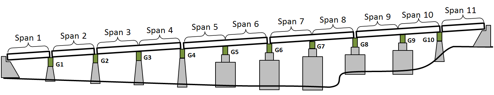

Test Structure Description
 ### Description The viaduct was first constructed in 1952. The superstructure was replaced in 1986, while reusing the original piers and foundations. The structure runs along the banks of the Schuylkill River and carries the Schuylkill Expressway (I-76) with a total of four lanes of traffic. Bridge users have reported experiencing unusually high levels of vibration while on the structure. ### Network The bridge is located on a major highway and carries more than 57,000 vehicles a day with 4% truck traffic. The bridge spans an access road and a railroad (spans 9 & 10). Testing of this bridge will not require access in the vicinity of the railroad.
### Description The viaduct was first constructed in 1952. The superstructure was replaced in 1986, while reusing the original piers and foundations. The structure runs along the banks of the Schuylkill River and carries the Schuylkill Expressway (I-76) with a total of four lanes of traffic. Bridge users have reported experiencing unusually high levels of vibration while on the structure. ### Network The bridge is located on a major highway and carries more than 57,000 vehicles a day with 4% truck traffic. The bridge spans an access road and a railroad (spans 9 & 10). Testing of this bridge will not require access in the vicinity of the railroad.
### Superstructure The structural type is steel multi-girder. Eight girders run longitudinally, resting on steel box girders that span transversely and are supported by the concrete piers. A reinforced concrete composite deck was cast in place, with a “raked” finish and no overlay. There is no skew. The bridge has eleven spans. The maximum span length is 140’-0”. The out-to-out width is 76’-6”. Three spans are simply supported, while the remaining eight are two-span continuous. Each span has five interior rows of X-framed diaphragms and chevron diaphragms over the piers.
 ### Substructure and Bearings The concrete piers and abutments were constructed in 1952 and are all that remains of the original structure. They are supported by driven piles. Elastomeric bearing pads are installed on top of the piers and support the transverse box girders. Rocker bearings or pedestals are installed between the box girders and longitudinal girders at those locations which are in the center of continuous spans. Elastomeric bearings are installed between the box girder and the longitudinal girders at the remaining locations. 
Condition
Visually, the deck appears to be in good condition, with no major cracking visible. Minor damage was observed in some regions of the center concrete barrier. The girders appeared in excellent condition. No major rusting was observed, and the girders appeared well maintained. The access hatches on many of the box girders had been left open. Any ill effects from this could not be immediately observed. The piers exhibited very little efflorescence and virtually no spalling. Repairs had been performed on several piers, where an embedded drainage pipe had rusted and cause a portion of concrete to spall off.
| Year Reconstructed |
1986 |
| Owner |
PennDOT |
| Skew |
0 degrees |
| Deck Width |
76’-6” |
| Maximum Span Length |
140’-0” |
| ADT |
57410 (2013) |
| Deck Condition |
6 (Satisfactory Condition) |
| Superstructure Condition |
7 (Good Condition) |
| Substructure Condition |
5 (Fair Condition) |
| Sufficiency Rating |
70 |
Strain Results
Operational Strain and Stress
A total of 12 strain gauges were installed and data recorded for more than 24 hours. Gauges were sampled at 50 Hz which allowed us to capture the dynamic behavior of the bridge.
Strain levels in excess of 100 microstrain (3 ksi) were not uncommon, and occasional responses as high as 6 ksi were recorded in the bottom flange of longitudinal girders at mid-span. The interior girders (supported at the center of the box girder) experienced the highest responses. A low pass filter was applied to the data to remove the data associated with frequencies above 1.5 Hz, thus permitting the dynamic response of the bridge to be removed from the data and only the static response of the bridge to be plotted.
Dynamic Amplification
The strain data plotted above has been filtered to show only the static response. The additional strain due to the vibration of the bridge is neglected. However, the portion of strain due to the dynamic response (vibration) of this structure is significant. The plot below is during a large event. The static response accounts for over 100 microstrain, but the vibration of the structure causes the total response to exceed 200 microstrain. For this event, an amplification of the static response by approximately 75% is observed. In comparison, the amplification applied for bridge design is only 33% or less.
This level of amplification is on the upper end of what researchers and transportation organizations have measured. However, the fact that the high amplification occurs regularly and even with large events, makes the nature of this bridge's response quite novel. ### Calculated Fatigue Life As the magnitude and frequency of strain responses were quite high, a fatigue life analysis was performed to investigate whether the components at the sensor locations were in danger of fatigue failure. A Rain Flow analysis with subsequent application of Miner's Rule was performed on the strain data collected to obtain estimates of fatigue life based on the cycles of strain measured. These fatigue life estimates are not for the entire structure, but only for those components that were instrumented and at the location of the installed gauge. Furthermore, the fatigue lives were based on the operational response of the structure during the two days of testing. This level of response, while expected to be representative of the typical response, is not guaranteed to be constant throughout the life of the bridge. Therefore, the quantities presented below serve to demonstrate the level of the structure's resistance to fatigue. They do not predict the time until fatigue failure.
Fatigue Life (years)
| A |
25042 |
9290.6 |
6513.8 |
49420 |
34513 |
32594 |
115360 |
| B |
12020 |
4459.5 |
3126.6 |
23722 |
16566 |
15645 |
55372 |
| C |
4407.4 |
1635.1 |
1146.4 |
8697.9 |
6074.2 |
5736.6 |
20303 |
These results suggest that in spite of high operational stress, these components are not vulnerable to fatigue.